← Índice de los 69 tutes de IDA
Tute 41 · Strings en stack y heap
se conecta con: Vulnerabilidades (defensivo)
INTRODUCCIÓN AL REVERSING CON IDA PRO DESDE CERO PARTE 41.
Seguiremos practicando y viendo ejemplos en este caso es un código que tiene formas diferentes de manejar y ubicar strings.
EJEMPLO STACK Y HEAP.
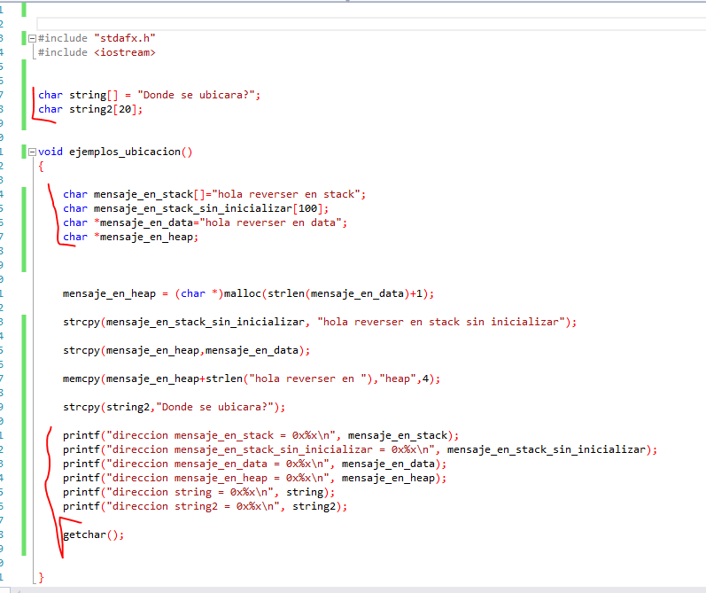
Vemos que hay varias array de caracteres y luego al final imprime las direcciones de cada uno, para ver donde se ubicó.
Aquí aun no vemos vulnerabilidades ni nada solo estamos viendo ubicaciones.
Abramos el ejecutable en el LOADER hacemos que cargue los símbolos, veremos la función main.
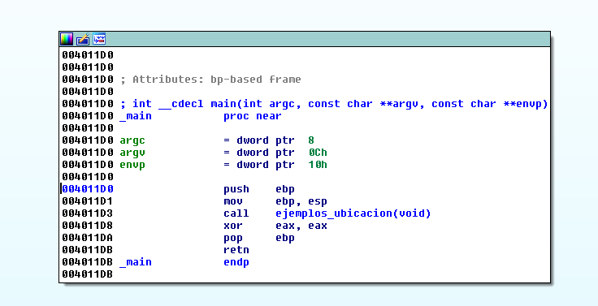
Ahí tenemos el main solo tiene una llamada a la función ejemplos_ubicación, nada más, activamos el DEMANGLE NAMES –NAMES.
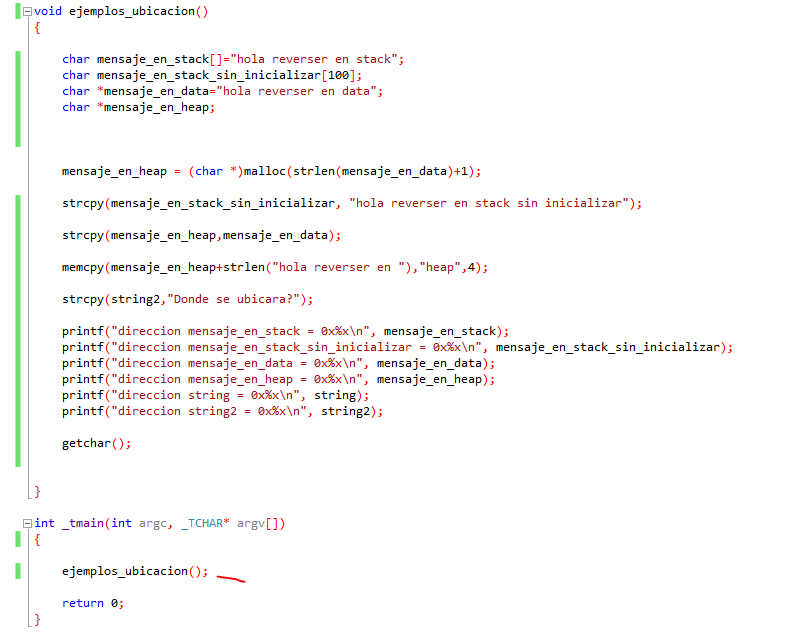
Ahí está, veamos que pasa dentro de la función, vemos que no tiene argumentos solo variables.
void __cdecl ejemplos_ubicacion()
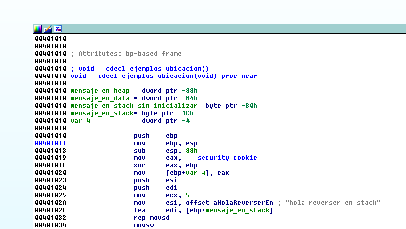
Si tuviera argumentos estarían dentro del paréntesis, además mirando la representación del stack.
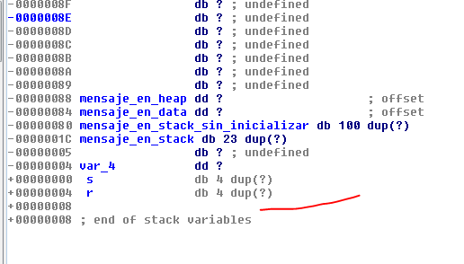
Si hubiera argumentos deberían estar debajo del return address r y no hay nada así que solo variables.
Allí veo el CANARY que se guarda en var_4, para comenzar a reversear.
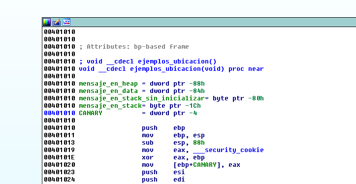
Volvamos a la representación del stack.
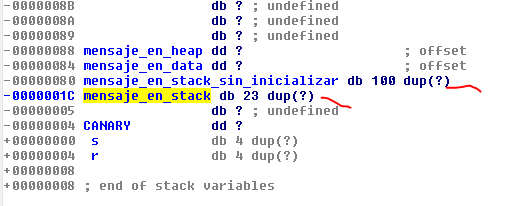
Vemos que tanto mensaje_en_stack como mensaje_en_stack_sin_inicializar, son buffers en el stack, aquí uno de 100 bytes y el otro de 23.
Allí vemos los dos casos.
char mensaje_en_stack[]="hola reverser en stack"; #inicializada
char mensaje_en_stack_sin_inicializar[100]; #no inicializada
Vemos que en el caso 2 se reserva 100 bytes porque no sabe lo que va a guardarse allí, podría ser algo que ingrese el usuario y no sea fijo, mientras que el otro guarda el espacio para la string “hola reverser en stack” que ya tiene un largo fijo determinado.
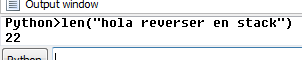
Mide 22 más el cero del final 23 de largo total.
Allí vemos cuando copia la string al stack e inicializa la variable.
Primero obtiene la dirección de la string con OFFSET y la mueve a ESI, luego la copiara a EDI que tiene la dirección del buffer en el stack.
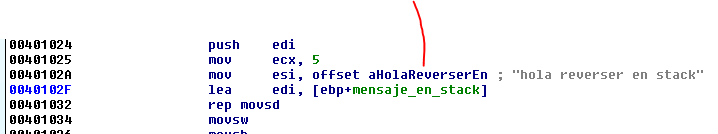
rdata
Declares an initialized data section that is readable but not writable. Microsoft compilers use this section to place constants in it.
Vemos que en la sección rdata Visual Studio guarda al compilar, los datos constantes que no cambiaran y en este caso la string se guarda allí y como la sección no es escribible no cambiara, para luego copiarla al stack.
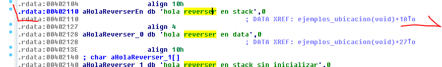
El LEA mueve a EDI la dirección del buffer en el stack y copia con el reps movs la string al mismo, inicializando la variable.
En el caso 1 la variable estaba inicializada, mientras que en el caso 2 no.
Lógicamente en el caso 2 este buffer sin inicializar esta para algo y el programa lo va a usar y llenar en algún momento.
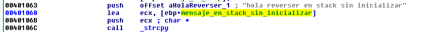
Lo hará ahí, parece similar al caso 1, pero ahora el programa usa una api de Windows para copiar, agarra el OFFSET de la string de la sección rdata “hola reverser sin inicializar” y copia con strcpy.
strcpy(mensaje_en_stack_sin_inicializar, "hola reverser en stack sin inicializar");
Obviamente el compilador en la inicialización de variables del stack como en el caso 1, no usara apis de Windows, se arreglara con instrucciones como reps movs, mientras que en el caso 2 ya es código del programa en sí que puede usar apis.
Se da la coincidencia que este caso 2 tiene una string ya determinada de tamaño fijo, pero podría ser una string que ingrese el usuario que puede variar su largo, allí habrá que chequear que no desborde el buffer, con una string más larga que el largo del mismo.
Obviamente de estas dos strings al final se obtendrá las direcciones de las mismas con LEA, y se imprimirán dichas direcciones.
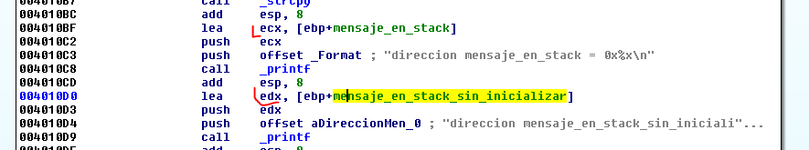
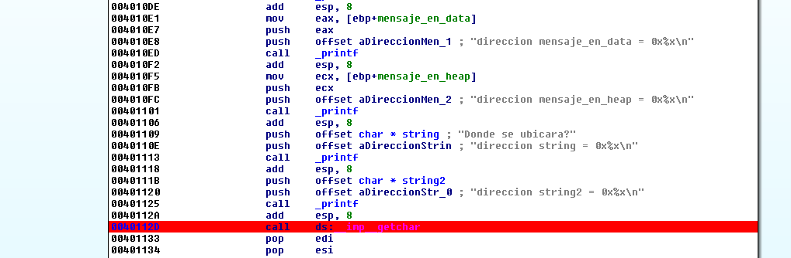
Si coloco un breakpoint allí y elijo el debugger local y arranco el programa en modo debugger.
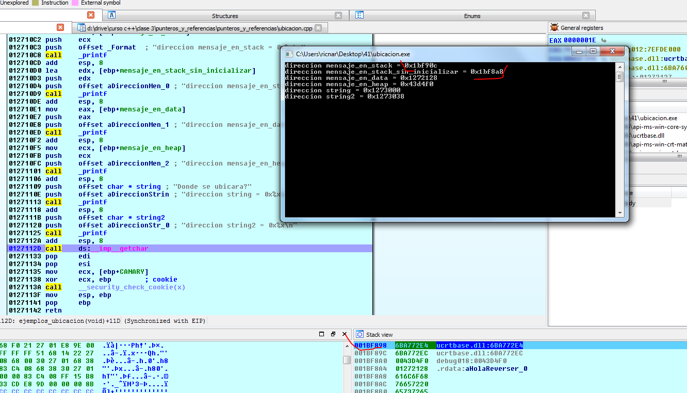
Veo que las direcciones que imprime son del stack y puedo ir a ver las strings a dichas direcciones.
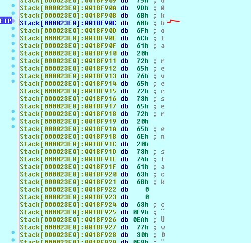
Si aprieto la A para convertir en string ascII.
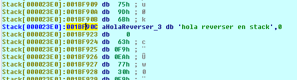
Y la otra.
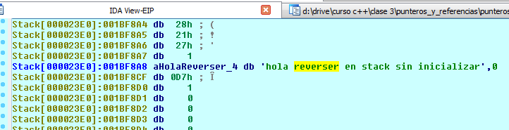
Así que por ahí vamos bien veamos las otras strings, paremos el debugger y volvamos al loader.
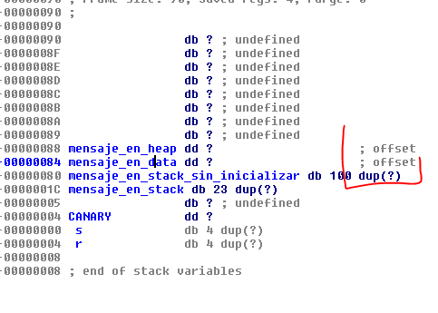
Vemos que las otras dos variables son punteros (offset) y solo ocupan 4 bytes cada una (dd).
Veamos primero el puntero mensaje_en_data.
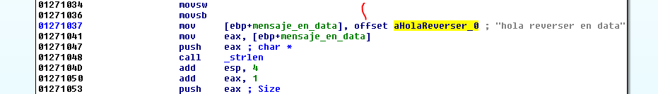
Vemos que en este caso como dijimos la variable es un puntero y guarda la dirección que obtiene con OFFSET en la variable del stack mensaje_en_data.
La string está ubicada en rdata y guardada allí y lo que manejamos en el stack es el puntero a la misma, mientras que en las anteriores la string se copiaba completa al stack llenando un buffer en el mismo.
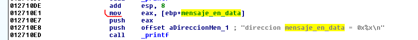
Vemos que ahora no necesita un LEA para hallar la dirección pues el valor de la variable es un puntero y es la dirección que se mueve a EAX y se pushea para imprimir su valor, veamos si lo debuggeamos igual que antes.
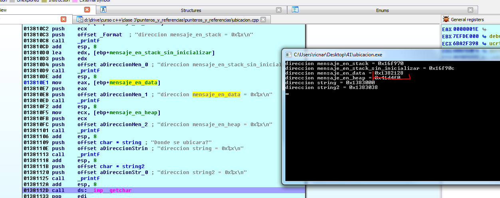
Si voy a dicha dirección de rdata estará la string.
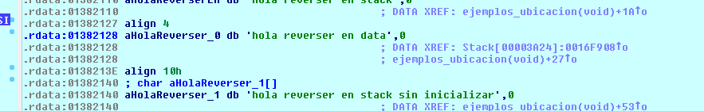
Y en la variable del stack esta guardada dicha dirección (OFFSET)
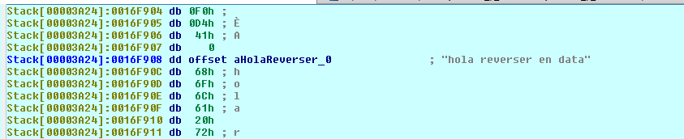
Allí esta el OFFSET si quiero ver el valor numérico apreto D.
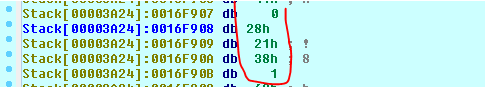
Si aprieto D varias veces cuando se transforma en un dword, detecta que apunta a la string y cambia al OFFSET de la misma.
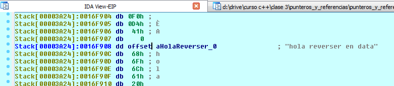
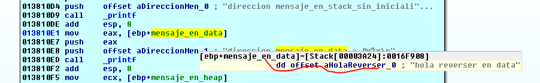
Allí vemos que poniendo el mouse vemos que dicha variable tiene guardada la dirección (OFFSET) de la string, pues es una variable puntero que guarda direcciones.
Dejemos la variable que nos queda pendiente del stack para el final y miremos las variables globales, el que no sabe las variables globales se ubican en el código fuente fuera de todas las funciones, generalmente arriba de todo.
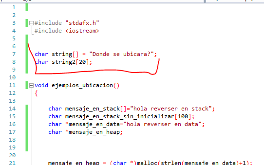
Vamos primero con la variable string que esta inicializada y es global.
Si miro el código veo que string se usa acá.
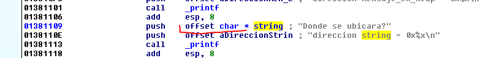
Vemos que pushea el offset de string, si vamos allí.
Vemos algo confuso estamos en la sección data la cual se utiliza para las variables globales.
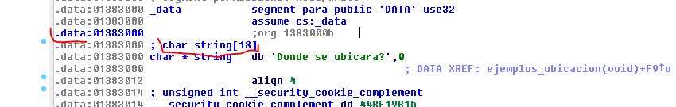
Por un lado está la definición del buffer char string [18] que la saca de los símbolos, sabe que es una string de ese largo la que ira allí en ese buffer,
Allí mismo está la string guardada “Donde se ubicara”, si apretamos D, vemos los bytes, si apretamos A volvemos a como estaba.
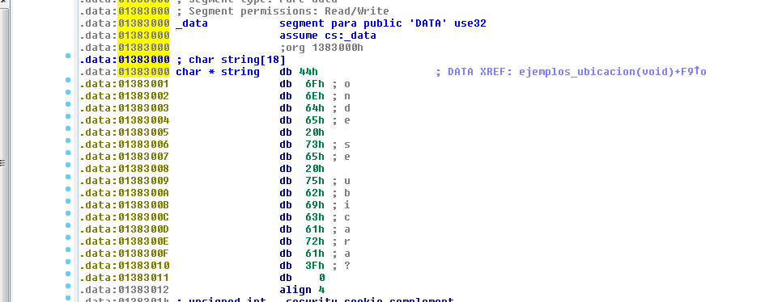
Normalmente cuando hay una segunda definición es porque hay alguna referencia a alguna api, de la misma saca que tipo de variable necesita y la coloca como definición también.
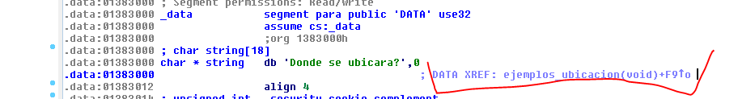
Ahí vemos que hay una referencia.
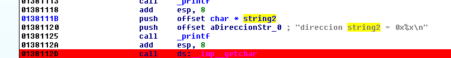
Es un argumento a printf cuyo segundo argumento es una dirección, si hacemos click derecho veremos que es la dirección donde se encuentra la cadena que le está pasando.
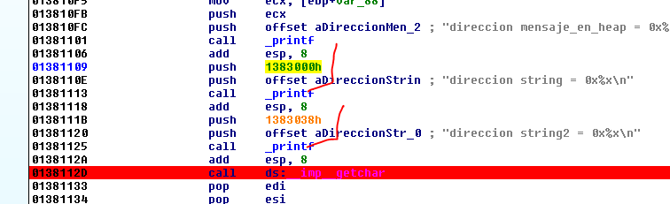
Allí al hacer click derecho reemplace los offset a las strings por directamente la dirección que va a imprimir, vemos que en ambas están en la sección data.
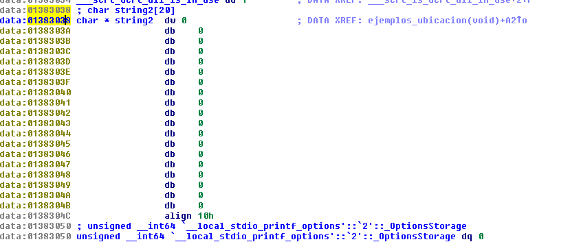
La única diferencia es que String2 no está inicializada por lo tanto con la A de ascII no la retorno al estado original, porque está llena de ceros, y esta vacía, así que click derecho ARRAY servirá.
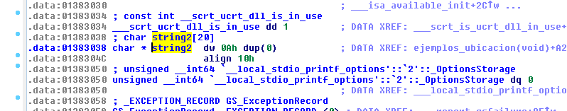
char * string2 dw 0Ah dup(0)
dup(0)
Significa que se repite el cero dw(2 bytes) por 0xa veces o sea dará 20 decimal.
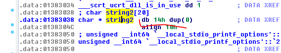
Si lo cambio a bytes es más directo serán 0x14 o sea 20 bytes llenos de ceros.
Veamos las referencias donde se llena.
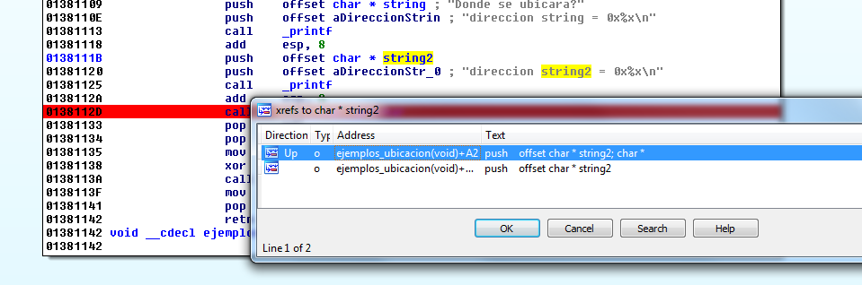
Volví el OFFSET que se pasa como argumento a la representación original, haciendo click derecho y eligiendo offset * char y luego con X veo las referencias, le primera es donde se llenara el buffer.
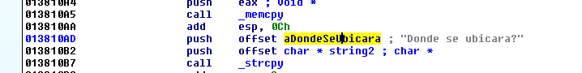
Veo que allí se copia la string que viene de rdata “Donde se ubicara?” al buffer en data que es escribible y puede modificarse.
Obviamente en la sección data como es una sección escribible y que puede tener buffers, puede haber overflows también, si está mal calculado el largo de la string, pudiendo pisar variables globales que estén allá y que afecten al programa.
Si probamos veremos al debuggear.
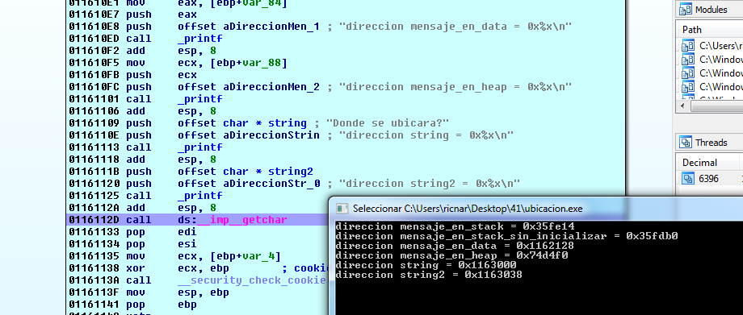
Las direcciones de string y string2 que corresponden a la sección data.
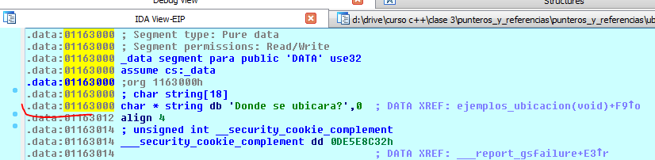
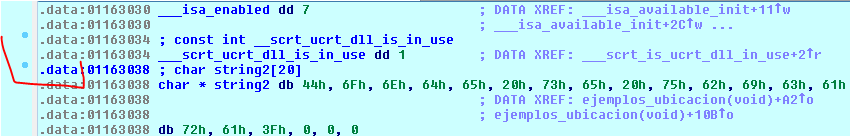
La que queda es ver la del heap, era un puntero en el stack que guardaba la dirección de la string que se ubicaba en el heap.
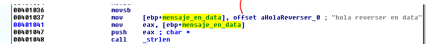
Vemos que allí guarda el OFFSET o sea la dirección de la string “hola reverser en data”, y luego le pasa la dirección a strlen para sacar el largo de la misma.
Al resultado le suma 1 tal cual hace el código fuente
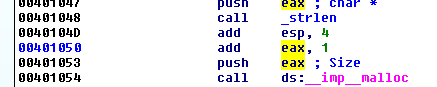
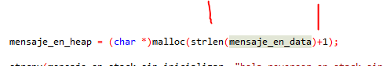
Y ese tamaño se lo pasa como size a malloc para reservar en el heap un buffer dinámico de tamaño largo de la string más 1.
La dirección que devuelva variara, pero será una zona reservada con permiso de lectura y escritura donde copiara más adelante.
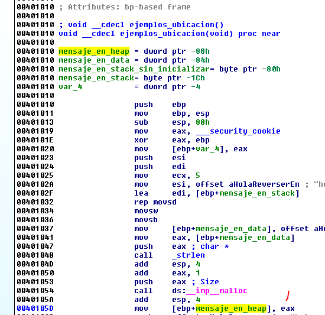
Allí guarda esa dirección del heap que apunta a ese buffer, en la variable puntero del stack llamada mensaje_en_heap.
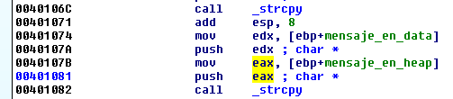
Luego copia la string apuntada por mensaje_en_data al buffer creado en el heap.
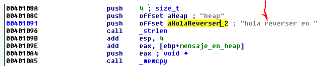
Luego le saca el largo de la string “hola reverser en “ y se la suma a la dirección de inicio del buffer en el heap, le queda justo apuntando para reemplazar la palabra data por heap, ya que hace un memcpy de 4 bytes pasando como source “heap” y como destination el puntero a la palabra data que está en el buffer del heap.
En el código fuente es esto
memcpy(mensaje_en_heap+strlen("hola reverser en "),"heap",4);
El destination es la dirección mensaje en heap + el largo de la string “hola reverser en “ eso quedara apuntando a la palabra data la que pisara con 4 bytes siendo el source “heap”.
Veamos si es cierto debuggeando.
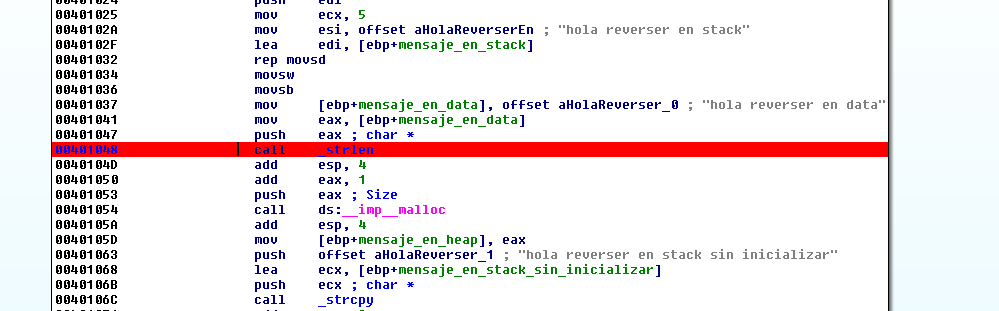
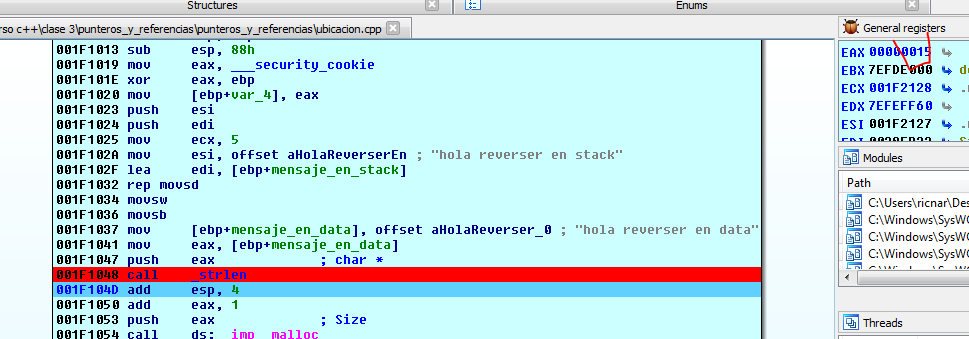
Allí saco el largo de la string “hola reverser en data “ y es 15 con el cero final.
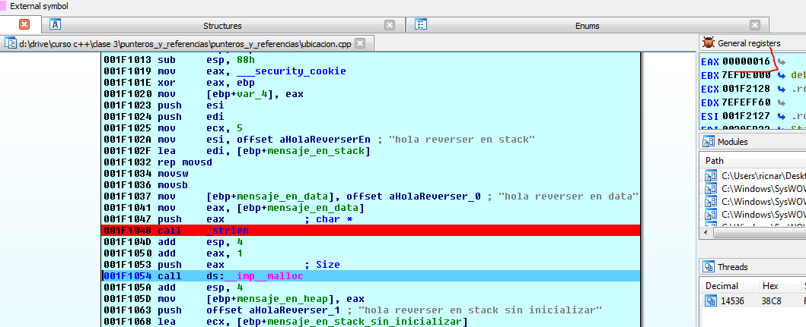
Allí le suma 1 y se lo paso a malloc para reservar 0x16 bytes.
Allí está el inicio del buffer en el heap en mi caso será 0x67d4f0.
Como el heap está en modo debug al arrancar desde un debugger se ve bien claro los 0x16 que son 22 decimal si desde el inicio los convertimos en dwords.
Como esta en modo debug (sino esto no funcionara) y aun no se escribió nada vemos BAAD FOOD jeje mala comida.
Son cinco DWORDS o sea 20 bytes de largo el buffer más los dos bytes finales 0xFEEE, le pedí 0x16 y me 22 decimal jeje.
Ya veremos más del heap por ahora ese es el buffer lleno de mala comida (BAAD FOOD) para darle de comer jeje.
Luego guarda la dirección en la variable puntero del stack.
Luego en ese strcpy copiara la string hola reverser en data en mi baad food jeje.
Si lo paso con f8.
Veo en el buffer del heap los bytes copiados con la A los convierto en string ascII.
Allí va a sacar el largo de “hola reverser en “
Da 11, luego se lo suma a la dirección de inicio del buffer en el heap.
Si descompongo la string original en bytes
Luego aprieto A allí.
Veo que va a escribir 4 bytes va a machacar la palabra “data” con “heap”.
Así que puedo descomponer la palabra heap y armar la string completa.
Bueno ya está armada la string en el heap, solo queda imprimir la dirección.
Bueno esto es todo por ahora traten de practicar y ver bien las strings y manejarlas con comodidad para acostumbrarse de a poco.
Hasta la parte 42.
Ricardo Narvaja